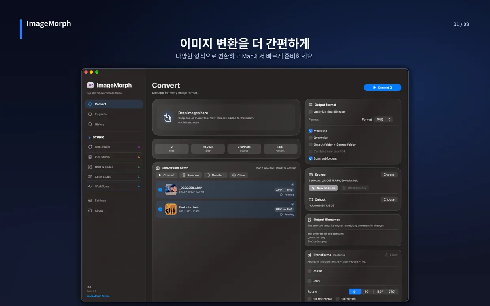
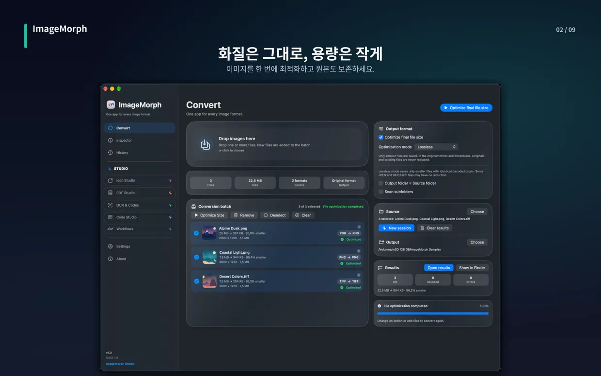
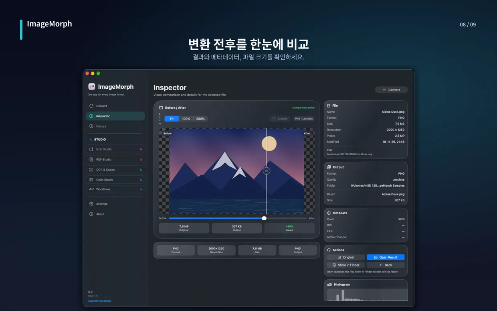
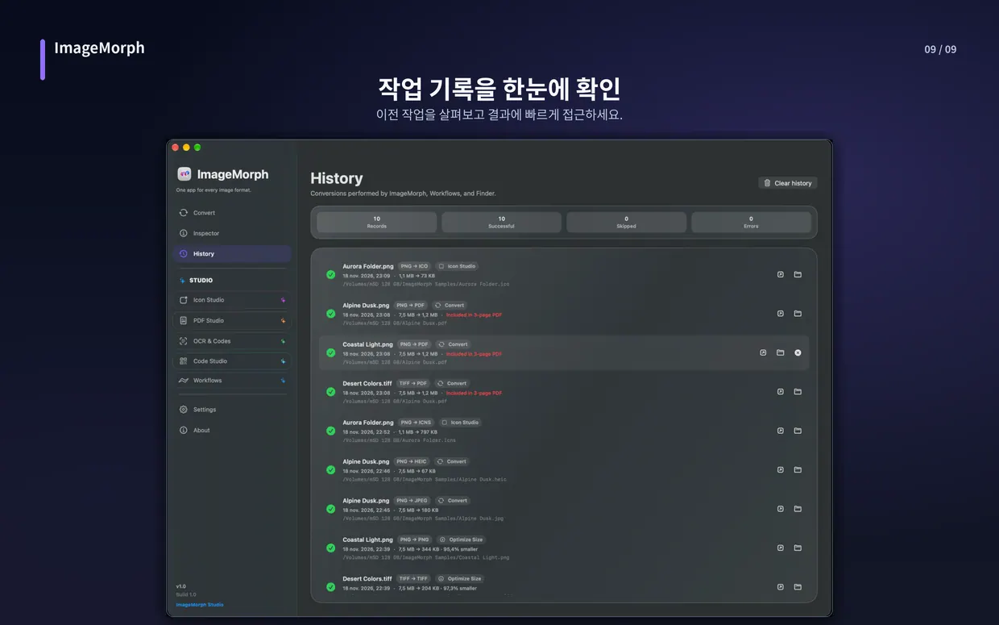
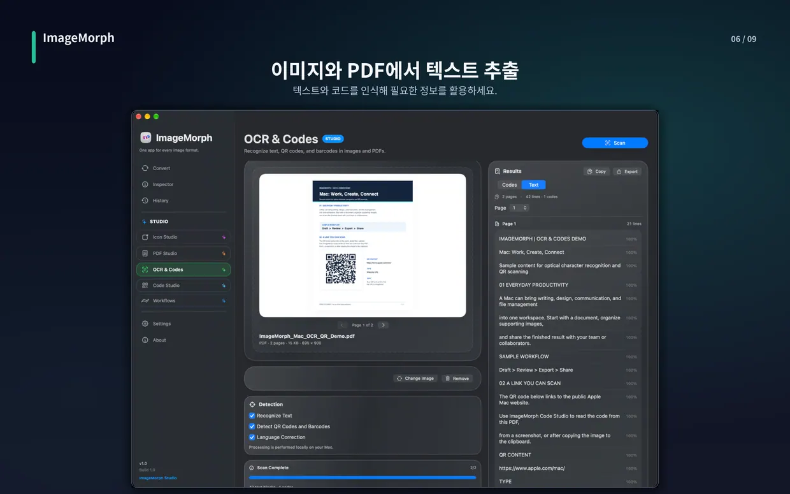
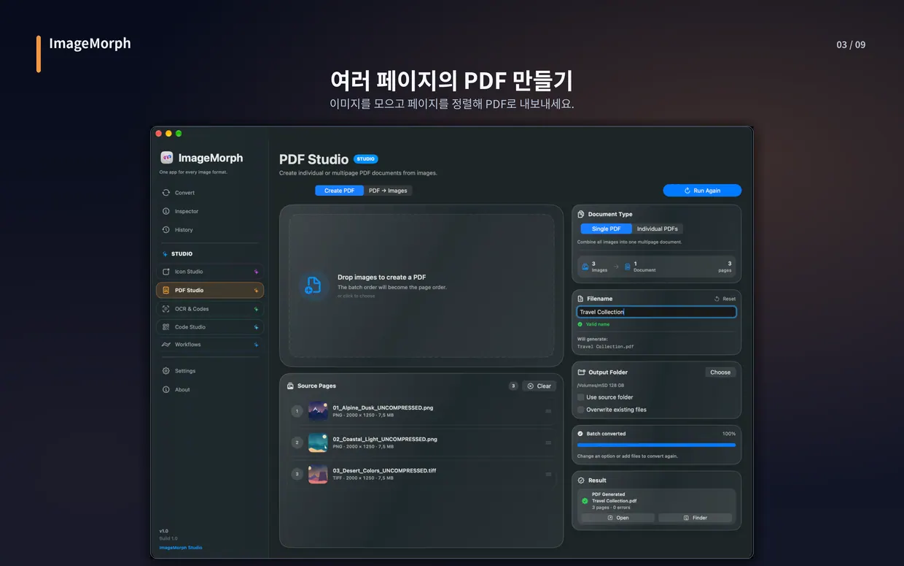
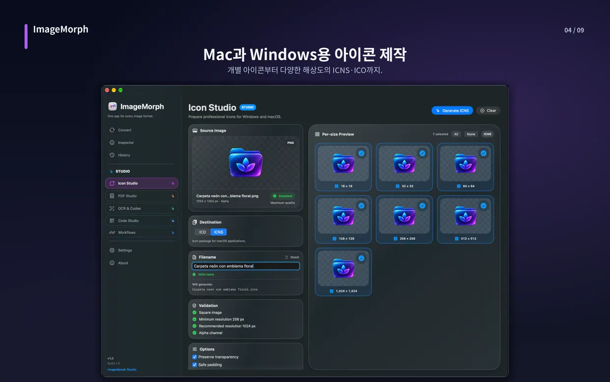
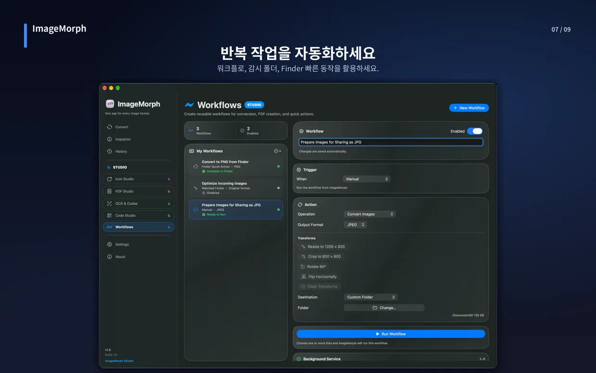

JPEG · PNG · HEIC · TIFF
JPEG, PNG, HEIC, TIFF를 개별 또는 일괄 처리합니다.

Mac에서 이미지를 변환하고 크기를 조절하며 최적화하세요. PDF를 만들고 반복 작업을 자동화합니다.
Mac App Store 출시 준비 중.

Mac에서 이미지를 변환하고 크기를 조절하며 최적화하세요. PDF를 만들고 반복 작업을 자동화합니다.

이미지와 여러 페이지 PDF의 텍스트를 인식하고 검토한 후 내보냅니다.
이메일이나 PDF에 포함된 QR 코드를 Mac에서 읽고 링크를 열기 전에 목적지 주소를 확인하세요.

JPEG, PNG, HEIC, TIFF를 개별 또는 일괄 처리합니다.

필요에 따라 이미지의 크기와 비율을 조정합니다. 원할 때 원본 가로세로 비율을 유지할 수 있습니다.

형식에 따라 무손실 또는 손실 최적화하며 결과가 작을 때만 출력합니다.

형식, 크기, 메타데이터를 확인하고 변환 후 원본과 결과를 비교할 수 있습니다.

최근 작업을 확인하고 결과 파일이 남아 있다면 열거나 Finder에서 표시할 수 있습니다.

Studio에는 OCR, 코드 인식, PDF 도구, 아이콘 제작 및 자동화 기능이 포함됩니다. 구독 없는 일회성 구매입니다.
Studio는 선택 가능한 영구 인앱 구매입니다.

이미지와 여러 페이지 PDF의 텍스트를 인식하고 검토한 후 내보냅니다.


클립보드, 이미지, PDF, 폴더에서 코드를 읽거나 호환 카메라와 스캐너로 캡처하세요. 열기 전에 링크를 확인할 수 있습니다.


여러 페이지 PDF를 만들고 페이지를 이미지로 내보내며 회전을 조정합니다.

ICO와 ICNS를 만들고 내보내기 전에 각 크기를 확인합니다.


QR, Code128, Data Matrix, EAN, PDF417, Aztec를 PNG 또는 PDF로 내보냅니다.

작업 흐름을 저장하고 폴더를 감시하며 Finder에서 작업을 시작합니다.

| 기능 | Free | Studio |
|---|---|---|
| 변환·크기 변경·최적화 | 포함 | 포함 |
| 대기열·Inspector·비교·히스토그램 | 포함 | 포함 |
| 기본 PDF 만들기 | 포함 | 포함 |
| PDF Studio 및 페이지 이미지 내보내기 | — | 포함 |
| OCR 및 코드 인식 | — | 포함 |
| 코드 생성·카메라/스캐너 입력 | — | 포함 |
| ICO·ICNS 세트 | — | 포함 |
| 워크플로·감시 폴더·Finder 빠른 동작 | — | 포함 |
지역별 가격, Studio 접근 권한 및 체험 자격은 앱에 표시됩니다. 구매와 복원은 Apple 서비스를 사용합니다.
이미지 변환·최적화, PDF 생성과 OCR은 Mac에서 처리됩니다. 파일 내용은 Studio 체험 인증 서비스로 전송하지 않습니다. 파일, 폴더, 카메라 및 스캐너 접근에는 권한이 필요하며 설정, 기록, 북마크, 파일명, 경로 및 오류 로그는 로컬에 저장될 수 있습니다.
개인정보 처리방침 읽기